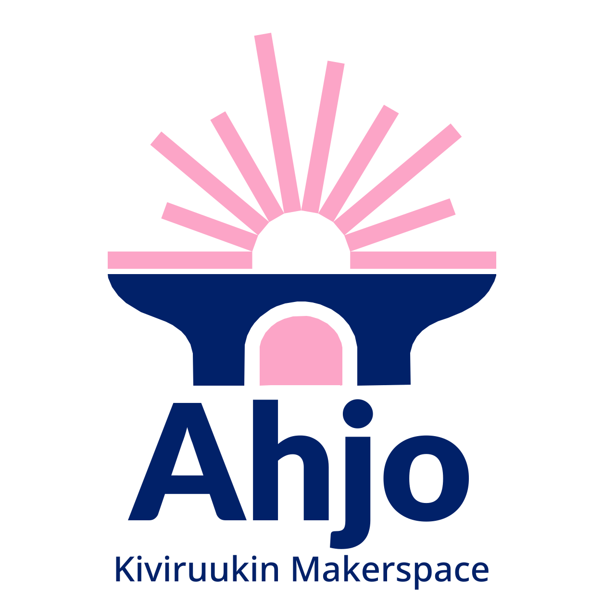

Lukioon ei tarvitse tulla valmiina. Kiviruukissa ei tarvitse vielä tietää, mikä sinusta tulee. Tuo kipinä: idea, oivallus tai pelkkä uteliaisuus. Täällä sitä kuumennetaan, kokeillaan ja taotaan yhdessä, kunnes jokaisen kipinä voi kasvaa liekiksi.
Yleislinja on leveä pohja, jolla kaikki kulkevat. Tiede & teknologia ja Talous & yrittäjyys ovat suuntia, eivät putkia: ne eroavat, risteävät ja palaavat yhteen. Kaikki kulkevat Ahjon kautta. Kosketa solmuja ja kokoa oma reittisi.
Polkusi on vielä tyhjä. Kosketa solmua ja lisää se polkuusi, tai valitse esimerkkireitti.
Oppiminen etenee tekemällä. Kipinä kuumenee ja saa muodon askel askeleelta. Polkusi solmut sytyttävät verbit; loput odottavat vuoroaan.
Valitse kartalta solmuja, niin näet, mihin asti polkusi jo yltää.
Ahjo on yhteinen solmu. Oppiainerajat ylittävä STEAM-oppimisympäristö, jossa luonnontieteet, matematiikka, ohjelmointi, muotoilu, yrittäjyys ja käytännön valmistaminen kohtaavat. Suunnittele. Kokeile. Rakenna. Kehitä.

Kosketa sädettä, niin näet, mitä se tuo ahjoon. Kaikki säteet kohtaavat samassa paikassa.
Digitaalisen valmistamisen verstas: 3D-mallinnus ja 3D-tulostus · laser- ja vinyylileikkaus · robotiikka · elektroniikka · prototypointi. Ideat viedään sujuvasti fyysisiksi prototyypeiksi ja ratkaisuiksi, ja Ahjoa käytetään oppimisympäristönä eri oppiaineiden opintojaksoilla.
Kiinnostus riittää. Diplomipolku on yksi tapa koota osaaminen omaksi työksi, ei ainoa. Valintaa ei tarvitse tehdä ennen lukion alkua, ja molemmat polut jakavat saman ytimen.
Luonnontieteet, matematiikka ja teknologia. Ohjelmointia, dataa, tekoälyä, robotiikkaa ja prototypointia: Ahjossa, laboratoriossa ja yhteistyökumppanien kanssa.
Vähintään 6 op polkuun soveltuvia opintoja ja 2 op diplomikurssi. Ahjo tukee kumpaakin: tutkimuksellista tekemistä ja innovaatio- ja prototyyppitöitä.
Talous, työelämätaidot, yrittäjyys ja innovointi. Markkinointia, sijoittamista, verkostoja ja yritysyhteistyötä: idea viedään kokeiluksi ja kokeilu toiminnaksi.
Kokeile kiinnostavia opintoja ja tutustu molempien polkujen mahdollisuuksiin.
Kokoa oma painotuksesi ja aloita diplomityö.
Viimeistele diplomityösi ja esittele se Kiviruukkipäivässä.
Polku ei tarkoita valintakoetta tai lukkoon lyötyjä opintoja. Se on omasta kiinnostuksesta rakentuva kokonaisuus, ja halutessaan sen voi rakentaa laajemmaksikin. Yleislinja, projektit, Ahjo ja yhteistyö ovat avoinna kaikille: diplomi on yksi reitti kartalla, ei portti.
Ruukin ympärille kasvoi ennen kokonainen kylä. Kiviruukissa taotaan raudan sijaan tietoa, ja tämänkin ruukin ytimessä on luja yhteisö: opettajat, naapurit ja maailma.
Korkeatasoista opetusta kovilla tavoitteilla, pehmeillä arvoilla: turvallisuus ja huolenpito. Jokainen opiskelija kohdataan yksilönä ja saa tukea ja ohjausta.
Kestävän kehityksen pilotointikeskus ja laboratoriot naapurissa: yhteistyötä, vierailuja ja projektitöitä.
Noin kymmenen kansainvälistä projektia, hanketta tai matkaa vuodessa. YK-koulun perinne ja Model UN jatkuvat Kiviruukissa.
Energiatehokas, kiertotalouteen rakennettu oppimisympäristö Kivenlahden metroaseman vieressä. Liikunta ja juhlat Hype-areenalla.
Polku, jonka kokosit kartalla, piirtyy tähän yhdeksi taotuksi viivaksi. Sen saa taoa uudelleen niin monta kertaa kuin haluaa.
Polkusi on vielä tyhjä. Palaa karttaan ja kosketa solmuja, niin viiva alkaa piirtyä.